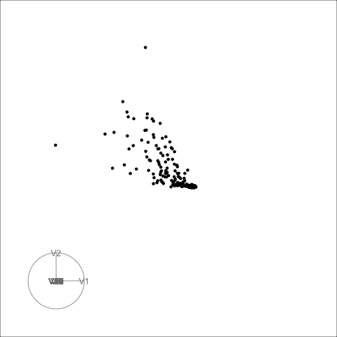
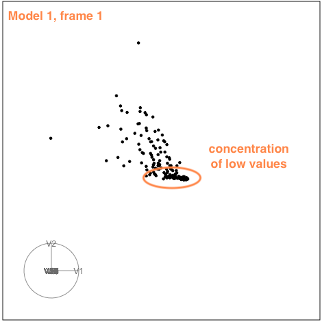
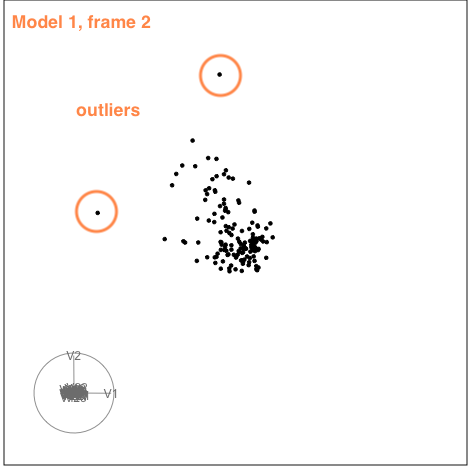
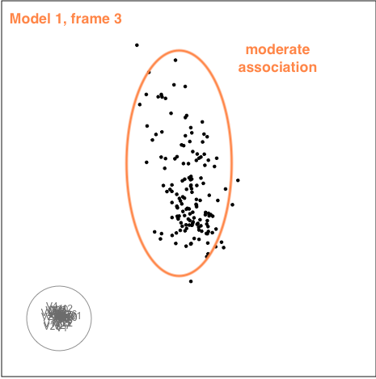
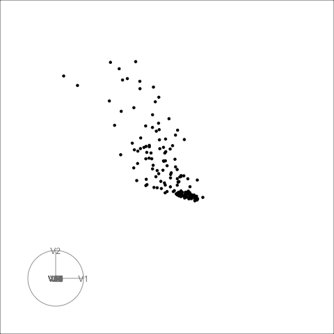
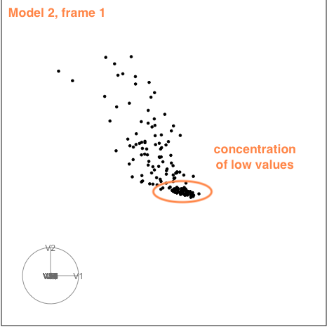
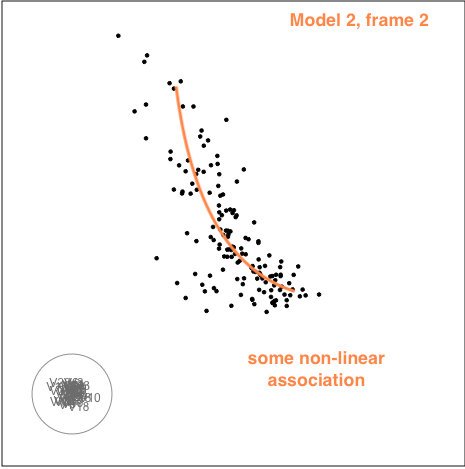
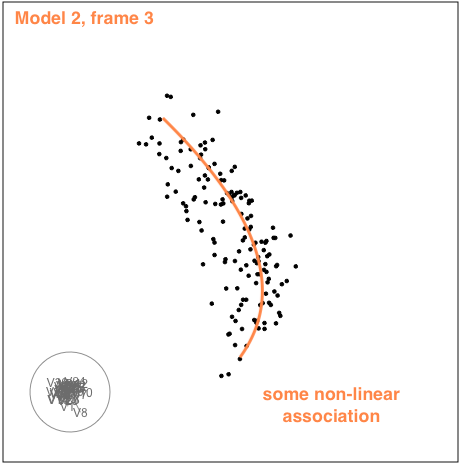

library(tourr)
quartz()
load("data/d1.rda")
load("data/d2.rda")
animate_xy(d1, axes="bottomleft", half_range=1.2)
render_gif(d1, grand_tour(), display_xy(,
axes="bottomleft", half_range=1.2),
frames = 100,
gif_file="d1.gif")
render_gif(d2, grand_tour(), display_xy(,
axes="bottomleft", half_range=1.2),
frames = 100,
gif_file="d2.gif")How to use a tour to check if your model suffers from multicollinearity
data visualisation
statistics
Multicollinearity
This was one of the comments from a recent review of a paper:
As you note in the paper, it seems likely that there are still issues with multi-collinearity
Multicollinearity means that the observations are co-linear in some combination of the variables. This has been relaxed in practice to mean substantial association between explanatory variables. When your explanatory variables have substantial association between them, it means that you don’t have a stable base on which to build a model. I like to say its like building a table with only two legs, or three legs but they are all in a row. The table top is going to be very wobbly. You need to have the legs placed broadly to provide a good base for the table top. Its similar for model fitting. You can think of the model like the table top, and the explanatory variables form the base. If the observations are not well spread out in the space, then the model fit will be unstable.
When there are only two predictors (explanatory variables) its easy to check, by plotting the two variables. With more variables its harder to detect. Common approaches are to use principal component analysis, and examine the screeplot, or proportion of variation explained by a subset of principal components. If all (or most) of the variation is explained with a subset of all the variables, it means you have a multicollinearity problem. You will need to drop some variables or do some other dimension reduction to fix it before choosing your final model.
Another approach is to compute the variance inflation factor for all the variables in your model. This measures how much the coefficients for the variable change when other variables are included with it in the model. This is the stability mentioned earlier - if there is multicollinearity the model coefficient for a variable can change substantially depending on whether another variable (or more) is included in the model or not. High variance inflation factors means that this variable’s coefficient changes a lot depending on the other variables, indicating multicollinearity among the collection of explanatory variables.
Tour
This is my favorite method for checking for multicollinearity. I usually do the routine approaches first (PCA and VIFs), and then run a tour. Here is the example from the paper, Jeremy Forbes, Rob Hyndman and myself are currently working on. There were actually multiple models fit, and I’ll show just two, because they do show the range.
This is the first set of explanatory variables. There are 150 observations and 32 variables. That’s about 5 observations for each dimension – its sparse.
(If you are new to tours, a good resource is to look at the Wickham et al (2011) as cited in the tourr package.)
Model 1

There is some collinearity, but there is also a little more. There is a concentration of points in the first couple of variables, which likely corresponds to a lot of very small values on these variables. It can be hard to fix this, usually a log or power transformation would be used. There are also a few outliers, just a few, and they are not very extreme. These are the points that float out from the others occasionally. The last frame below shows a point where the collinearity is visible. The points flatten into a tall pancake, which says that there is moderate association between them.
|  |  |  |
Model 2

The second example is similar to the first. There is also some nonlinear association visible, but the outliers are less extreme.
|  |  |  |
Summary
While there is evidence of multicollinearity for both of these sets of explanatory variables, its not very severe. Its more like a table built with one thick central plank for support. These sort of tables exist and are reasonably stable. We can not be absolutely certain, but the conclusion would be that the models are robust.
An aside about multicollinearity and model fitting purpose: we typically consider this to be a problem only if the purpose is explanatory rather than predictive. If the goal is to predict from the model and the new predictor values are in the range of the existing data, then the predictions are ok. Think about it like the table on two legs, the line at which the table top sits on the legs is the same, even if the table top pivots around this line. For explanation, because the coefficients can change dramatically depending on the other variables in the model, the interpretation of the coefficient is unreliable with multicollinearity.
Now, I dare someone to add a sentence to their next model application paper like “Multicollinearity was checked using a tour on all the explanatory variables, run for 3.46 minutes.” (Ha, ha)